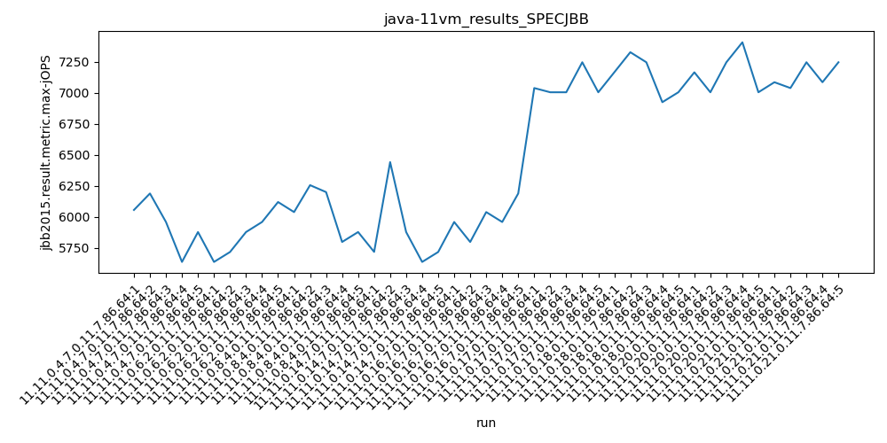

java-11 SPECJBB
Context at bottom
/home/jvanek/git/benchmarks-in-nested-virtualisation-toolchain/final_results/vm_results/vm_results_DACAPO
java-11
SPECJBB
/home/jvanek/git/benchmarks-in-nested-virtualisation-toolchain/final_results/vm_results/vm_results_SPECJBB
java-11
SPECJBB
vm_results_SPECJBB
- vm_results_SPECJBB - max-jops
- vm_results_SPECJBB - critical jops
vm_results_SPECJBB - max-jops
Expected number of java-11 JDKs: 7
1st avgmed_alljdks_metric:
/home/jvanek/git/benchmarks-in-nested-virtualisation-toolchain/final_results/result_processing.py /home/jvanek/git/benchmarks-in-nested-virtualisation-toolchain/final_results/vm_results/vm_results_SPECJBB jbb2015.result.metric.max-jOPS False
values: [6054, 6187, 5957, 5635, 5876, 5635, 5715, 5876, 5957, 6118, 6037, 6254, 6198, 5796, 5876, 5716, 6440, 5876, 5635, 5715, 5957, 5796, 6037, 5957, 6187]

Expected number of iterations: 5
final number of values: 25 out of 35
Pass rate: 71.4%
values: (5635, 6440, 5939.48, 5957)

** accuracy from all jdks and runs
more is better
MIN: 5635
MAX: 6440
AVG: 5939.48
MED: 5957
Relative differences 1:
MIN-MAX: 12.0 %
MIN-AVG: 5.0 %
MIN-MED: 5.0 %
MAX-MIN: -14.0 %
MAX-AVG: -8.0 %
MAX-MED: -8.0 %
AVG-MED: 0.0 %
stored to java-11.properties. sort | uniq that!
2nd avgmed_by_jdk_metric:
values: [5941.8, 5860.2, 6032.2, 5876.4, 5986.8]

values: [5957, 5876, 6037, 5716, 5957]

values: (5860.2, 6032.2, 5939.4800000000005, 5941.8)
values: (5716, 6037, 5908.6, 5957)

** accuracy from all jdks where runs were avged
more is better
MIN: 5860.2
MAX: 6032.2
AVG: 5939.4800000000005
MED: 5941.8
Relative differences 1:
MIN-MAX: 3.0 %
MIN-AVG: 1.0 %
MIN-MED: 1.0 %
MAX-MIN: -3.0 %
MAX-AVG: -2.0 %
MAX-MED: -2.0 %
AVG-MED: 0.0 %
stored to java-11.properties. sort | uniq that!
** accuracy from all jdks where runs were medianed
more is better
MIN: 5716
MAX: 6037
AVG: 5908.6
MED: 5957
Relative differences 1:
MIN-MAX: 5.0 %
MIN-AVG: 3.0 %
MIN-MED: 4.0 %
MAX-MIN: -6.0 %
MAX-AVG: -2.0 %
MAX-MED: -1.0 %
AVG-MED: 1.0 %
stored to java-11.properties. sort | uniq that!
vm_results_SPECJBB - critical jops
Expected number of java-11 JDKs: 7
1st avgmed_alljdks_metric:
/home/jvanek/git/benchmarks-in-nested-virtualisation-toolchain/final_results/result_processing.py /home/jvanek/git/benchmarks-in-nested-virtualisation-toolchain/final_results/vm_results/vm_results_SPECJBB jbb2015.result.metric.critical-jOPS False
values: [1296, 1430, 1239, 1160, 1130, 1177, 1215, 1355, 1296, 1254, 1194, 1371, 1208, 1318, 1230, 1333, 1240, 1318, 1358, 1348, 1248, 1280, 1213, 1375, 1379]

Expected number of iterations: 5
final number of values: 25 out of 35
Pass rate: 71.4%
values: (1130, 1430, 1278.6, 1280)

** accuracy from all jdks and runs
more is better
MIN: 1130
MAX: 1430
AVG: 1278.6
MED: 1280
Relative differences 1:
MIN-MAX: 21.0 %
MIN-AVG: 12.0 %
MIN-MED: 12.0 %
MAX-MIN: -27.0 %
MAX-AVG: -12.0 %
MAX-MED: -12.0 %
AVG-MED: 0.0 %
stored to java-11.properties. sort | uniq that!
2nd avgmed_by_jdk_metric:
values: [1251.0, 1259.4, 1264.2, 1319.4, 1299.0]

values: [1239, 1254, 1230, 1333, 1280]

values: (1251.0, 1319.4, 1278.6, 1264.2)
values: (1230, 1333, 1267.2, 1254)

** accuracy from all jdks where runs were avged
more is better
MIN: 1251.0
MAX: 1319.4
AVG: 1278.6
MED: 1264.2
Relative differences 1:
MIN-MAX: 5.0 %
MIN-AVG: 2.0 %
MIN-MED: 1.0 %
MAX-MIN: -5.0 %
MAX-AVG: -3.0 %
MAX-MED: -4.0 %
AVG-MED: -1.0 %
stored to java-11.properties. sort | uniq that!
** accuracy from all jdks where runs were medianed
more is better
MIN: 1230
MAX: 1333
AVG: 1267.2
MED: 1254
Relative differences 1:
MIN-MAX: 8.0 %
MIN-AVG: 3.0 %
MIN-MED: 2.0 %
MAX-MIN: -8.0 %
MAX-AVG: -5.0 %
MAX-MED: -6.0 %
AVG-MED: -1.0 %
stored to java-11.properties. sort | uniq that!
/home/jvanek/git/benchmarks-in-nested-virtualisation-toolchain/final_results/vm_results/vm_results_RADARGUNs3
java-11
SPECJBB
/home/jvanek/git/benchmarks-in-nested-virtualisation-toolchain/final_results/vm_results/vm_results_JMH
java-11
SPECJBB
/home/jvanek/git/benchmarks-in-nested-virtualisation-toolchain/final_results/vm_results/vm_results_RADARGUNs1
java-11
SPECJBB
/home/jvanek/git/benchmarks-in-nested-virtualisation-toolchain/final_results/vm_results/vm_results_J2DBENCH
java-11
SPECJBB
pass rates:
vm_results_SPECJBB=71.4%
Context:
- vm_results
- SPECJBB